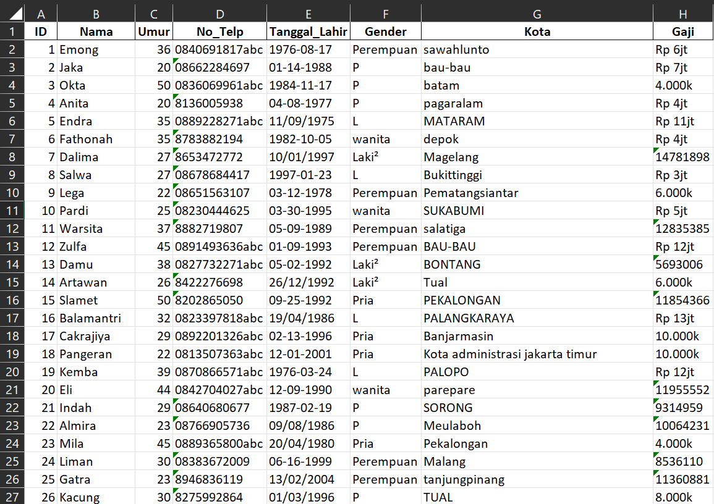
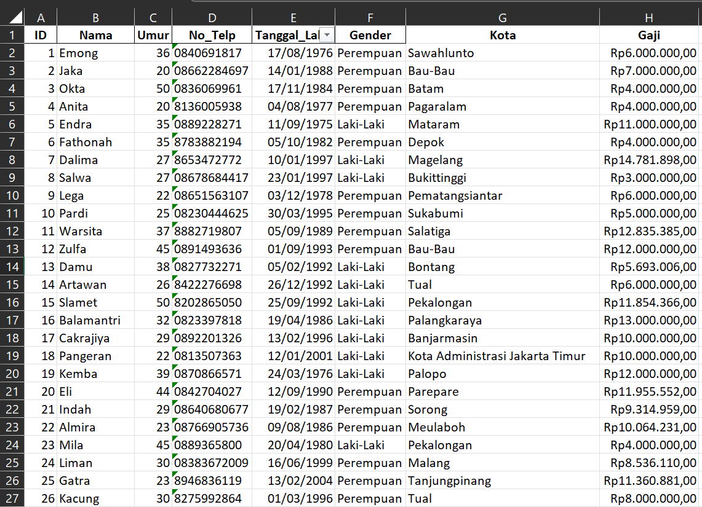

Kumpulan Pengerjaan Project
Analisis data Bussines Coffee Shop, Source by Kaggle
- Melakukan Data Eksplorasi dan Data Cleaning guna untuk menghilangkan data kosong atau data double.
- Melakukan pengelompokan perhitungan masing masing data
- Melakukan analyst dengan cara create list question.
- Melakukan Pivot Chart untuk visualisasi data
Analisis data jumlah kematian bayi neonatal di provinsi Aceh
- Melakukan Data Eksplorasi dan Data Cleaning guna untuk menghilangkan data kosong atau data double.
- Melakukan pengelompokan perhitungan masing masing data
- Melakukan analyst dengan cara create list question.
- Melakukan Pivot Table untuk hitung jumlah puskesmas, jumlah kematian bayi laki-laki dan perempuan
- Melakukan Pivot Chart untuk visualisasi data

Data Awal data yang sudah di eksplorasi dan sudah di cleaning.

Pivot table untuk menghitung jumlah puskesmas dan kematian bayi laki-laki dan perempuan

Pengelompokan Kematian bayi neonatal berdasarkan kabupaten

Dashboard hasil akhir untuk visualisasi data
Administrasi Pengolahan Data Karyawan
- Mengelola dan membersihkan data karyawan agar rapi dan konsisten.
- Mengunakaan beberapa rumus seperti if, subtitude, proper untuk rekap data.
- Membuat rekap laporan data menggunakan Excel.
- Menyusun laporan administrasi data untuk mendukung kegiatan operasional dan pengambilan keputusan.

Data Awal data yang masih berantakan masih campur aduk.

Data Akhir data yang sudah rapi data yang sudah dibersihkan